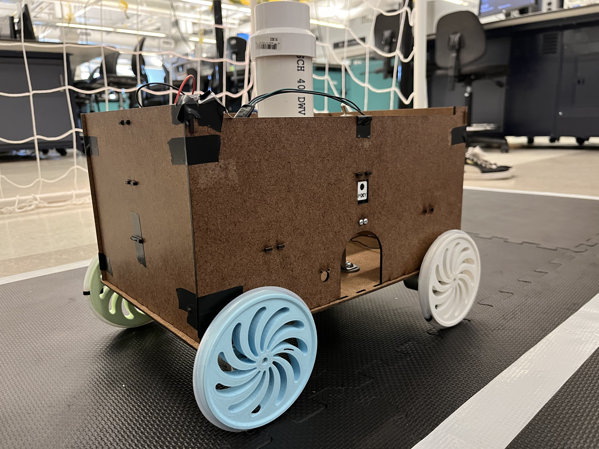
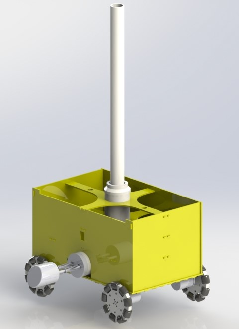
Soccor PK Bot Report
Autonomous Soccer PK Robot
- Designed and manufactured a Soccer Penalty Kick Robot for classroom competition.
- Soccer penalty kick robot operates autonomously to sense postion of soccer ball with computer vision.
- Chassis and kicking mechanism developed within CU Boulder's manufacturing facilities.
- Total budget remained under $320. Chassis under $120.
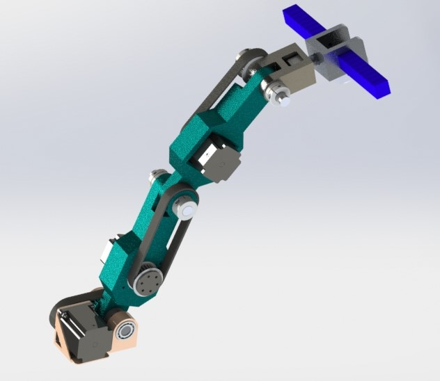
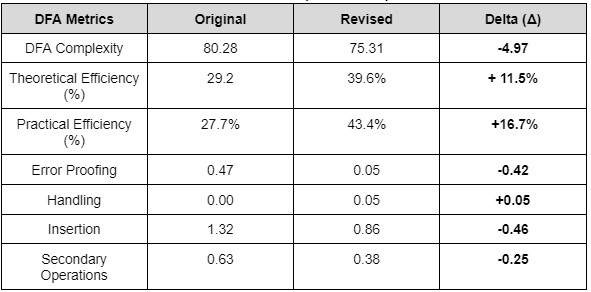
DFM Report
DFM Presentation
Robotic Arm with Pneumatic Gripper
- DFM project adapted from CU Rover Team's robotic arm.
- Design for Assembly (DFA) analysis completed towards action for reduction in DFA complexity from 80.28 to 75.31 points.
- Reduction in error proffing and secondary operations required from redesigns as single part linkages and a soft robotic gripper.
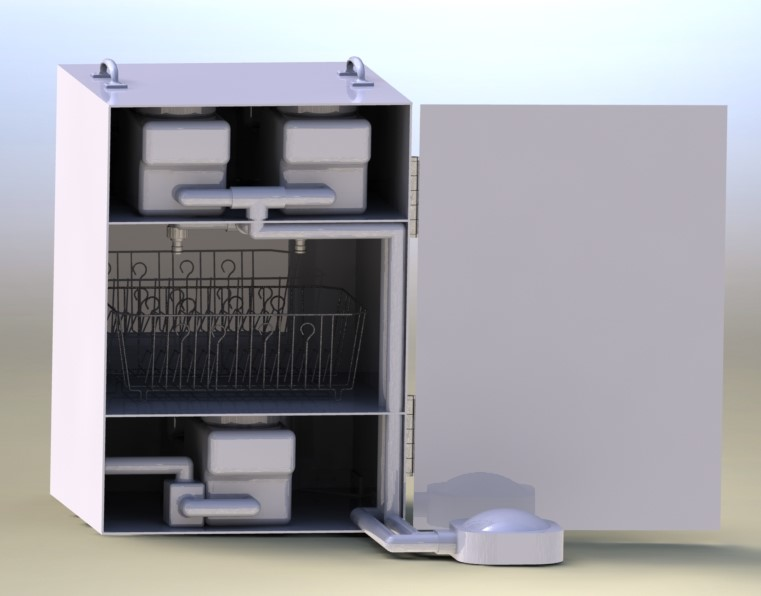
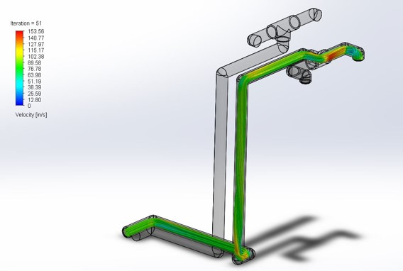
Sustainable Dishwasher
- Designed a non electric dishwasher that has portable capabilities.
- Developed flow simulation for analysis of the pump.
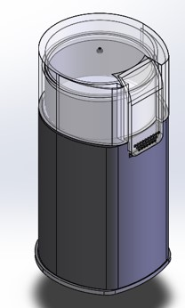
Reverse Engineering Report
Reverse Engineering Presentation
Coffee Grinder
- Reverse Engineers a coffee grinder and developed GD&T drawings for all the components.
- Completed Design for Assembly analysis to reduce DFA Complexity metrics.
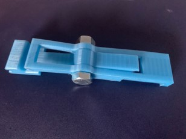
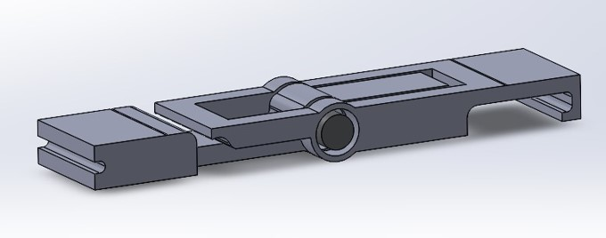
Business Plan Report
Bike Repair's Presentation
Bicycle Tire Removal/Installation Clamp
- Two-in-One tool for bicycle tire removal/installation as a combined bike lever and tire clamp.
- Pocket sized design for on-the-go travels.
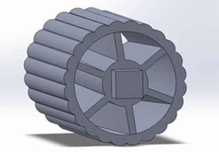
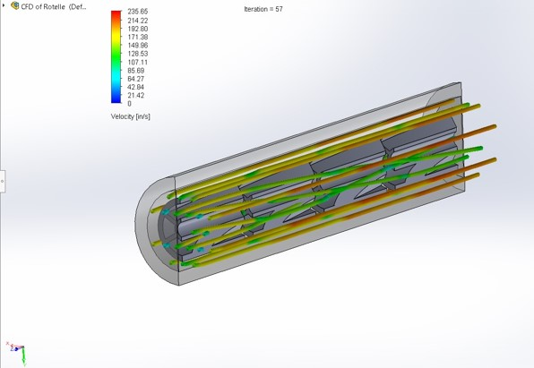
Inline Static Mixers Presentation
Inline Static Mixers
- Developed design improvements for a lab group onto static mixing processes.
- Developed a flow analysis for fluid moving across static mixers.
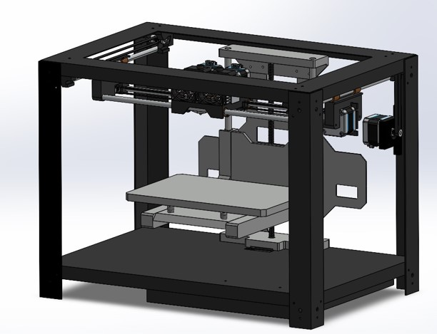
MakerBot Replicator II
- Reverse engineered 3D printer for case study in machine learning project.
- Involvement had been with this Naval Research Lab funded project to push the boundaries of machine
learning technologies and objective recognition.
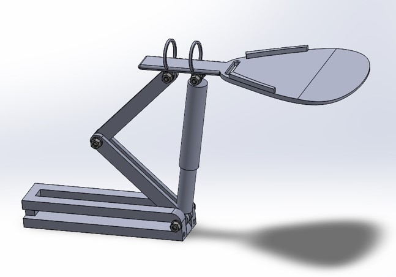
Oven Assist System
- Designed a product that assist persons in
wheelchairs with oven use in residential
kitchens.
- Having this system attach to wheelchairs will
allow wheelchair uses to cook independently.
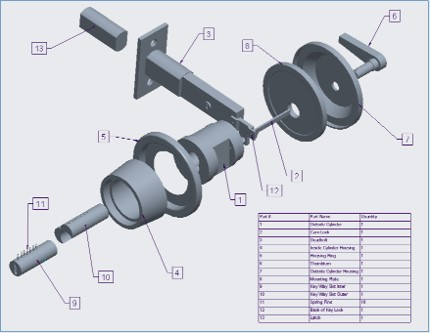
Safety Lock
- Designed a deadbolt lock for vertical and
horizontal locking pins.
- This product can provide additional safety
to the traditional deadbolt by having vertical
and horizontal keys.